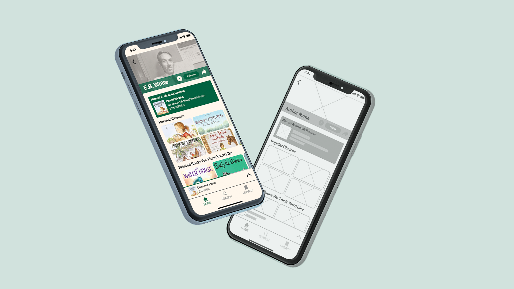

Tasked with designing an application to solve problems in a pre-existing market, I designed the user interface for Audiokast, an application made for audiobook and podcast listening with a fresh and accessible interface.
While I helped my teammates finding a sustainable business plan and creating features that would compete with other apps, I mainly handled designing the app itself. Taking inspiration from music platform Spotify and the Apple App Store, I created the Audiokast interface to look highly attractive, something that many other applications sidelined or outright ignored.
I focused heavily on the home page and author page, both of which I felt would be the most-visited pages on the application. I designed the home page to encourage users to continue already-visited audiobooks and podcasts and consider new suggestions.
Here's a link to a Google Drive folder with high fidelity mobile designs of Audiokast.